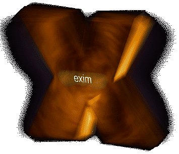

The Exim Home Page
Exim is a message transfer agent (MTA) developed at the
University of Cambridge for use on Unix systems connected to the
Internet. It is freely available under the terms of the GNU
General Public Licence. In style it is similar to Smail
3, but its facilities are more extensive, and in particular it
has some defences against mail bombs and unsolicited junk mail in
the form of options for refusing messages from particular hosts,
networks, or senders. It can be installed in place of sendmail,
although the configuration of exim is quite different to that of
sendmail.
An expanded introduction is available.
New Things
-
Exim Version 3.34 is available - see the availability pages to get hold of a
copy. Documentation has been patially updated to match.
Version 3.34 fixes an exploitable (in rare configurations)
security bug - upgrading is strongly recommended.
-
Printed copies of the
Exim 3 documentation are available from BSDMall as part of Prime
Freeware's Dossier
project (NB this is a printed form of
documents bundled in electronic form with Exim).
-
The information on the Mailing
Lists also now contains a search form.
-
A Generic Windows Executable Content filter is
available at
ftp://ftp.exim.org/pub/filter/ or here. This is an exim system
filter which attempts to detect executables including the
types responsible for the Windows/Outlook mail worms, and also
the recent bugs with header length checking (see this
BugTraq article). It is not infallible, but many sites
may find it useful. The file contains installation
instructions. Version 0.13 released on 22 May.
Exim Book
The definitive exim book,
written by Philip Hazel, is now available. Orders can
be placed through a number of the on-line retailers.
Nigel Metheringham
$Id: home.html,v 1.14 2001/08/02 17:09:29 nigel Exp $